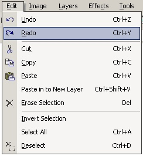

Redo Operation
|
 The Redo Operation (Edit-->Redo) allows for redoing an action which was previously undone. The Redo Operation is also accessible from the History Window. The images below show the gradual return to an original composite image by the continual usage of the Redo Operation. |
| Original Image (All Alterations Undone) | First Redo |
| Second Redo | Third Redo (Complete Composite Image) |